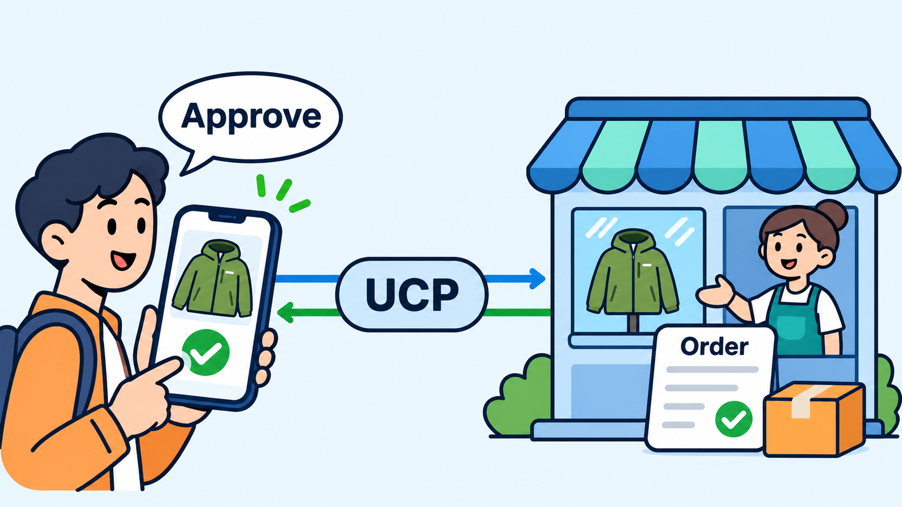

Appendix
Universal Commerce Protocol: A Beginner's Tutorial
AI-assisted: researched and written with Claude Code and Codex; illustrations generated with Gemini and OpenAI image tools. How this works

Illustration generated with OpenAI image tools.